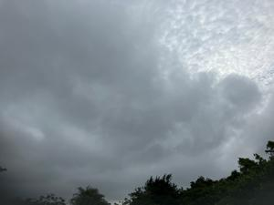

うるがいの話 ある日
最新: 愚痴（ぐち）を言うこと【うるがいの話 ある日】とは 一日だけのプログです
『うるがいの話』の最新一日だけのプログで、通信料が少なく経済的だ。カニの画像をクリックすると全ての日付が載る『うるがいの話』サイトを表示します
|
|
【うるがいの話】 うるがい(ｳﾙｶﾞｲ urugai)とは、『もずくがに』の名前でとても大きくなります。 |
|---|---|
|
|
【カミマヤーの話】 猫のことを方言でマヤーといいます。カミマヤー（kamimayaa）とは、神の猫のことです。 |
|
【たながぁの音楽】 たながぁ（ﾀﾅｶﾞｰ tanagaa）とは手長えびのことで、何種類かあり大きいのは車 エビぐらいになります。 |

|
【ぶながぁの話】 ぶながぁ(ﾌﾞﾅｶﾞｰ bunagaa)とは、赤い髪の毛、赤い身体、そして身長は１ｍ２０ｃｍ ぐらい、川の蟹を食べているの目撃された。場所は沖縄県国頭郡大宜味村のと ある村僕の隣近所に住んでいる爺さんから、聞いた話です。 |
|
|
【ギーマの話】 ギーマ(giima)とは、山原の里山に咲くスズランに似た、 花を付けます。実は食べられます、 気が付くと口の周りが紫になっています。 |
2023年06月21日 (水）愚痴（ぐち）を言うこと
15:48

夕方、ヨメが義妹に電話をすると、お義母さんは『ホームの戻りたい』と言っ
ていると。オオ、早すぎる。
プログ 伊勢ー白山 道 より引用
釈尊は、不幸に成る人や家系に対して、三毒（さんどく）が無いように注意し
ていました。この三毒を避けるだけで、人は変わって行くのです。
運命も変わります。
その三毒とは何かと言いますと、
・ 怒りの心を持つこと、憎しみの感情を持つことです。
・ 必要以上の貪欲を持つことです。
・ 愚痴（ぐち）を言うこと、嫉妬心を持つこと、何でも悪く見ることです。
とかく、お義母さんは四六時中、愚痴を言っている。ヨメの話だと、病院でも
大きな声で、なんで私がこの病院へ来ないといけないのか、こんな病院！と喋
っていたらしい。ただし、医者の前では猫を被ったように、よそ向きの話し方
をする（医者も認知しているが）とのこと。マンションでも、生きてもしょう
がない、なんで私がこんな思いをするのか、悪いこともしていないのに（家族
はそう思ってないが・・・）と変わらず喋っているらしい。義妹も、心療内科
に通院治療をしている身、でも何とかもって欲しいと思うのである。
『ゆいレール ８月１０日に３両化』と新聞の見出し、子供はモノレールを利
用して通勤しているが、モノレールが混んでいるので乗る場所を混んでいない
駅まで歩いるとのこと、ただ、雨が降る場合は歩くのも大変で・・・とぼやい
ていたので、良報である。梅雨も明けたようだし。
１５時１９分 ビットコインの総資産 ￥１１、７６２（↑７４４）